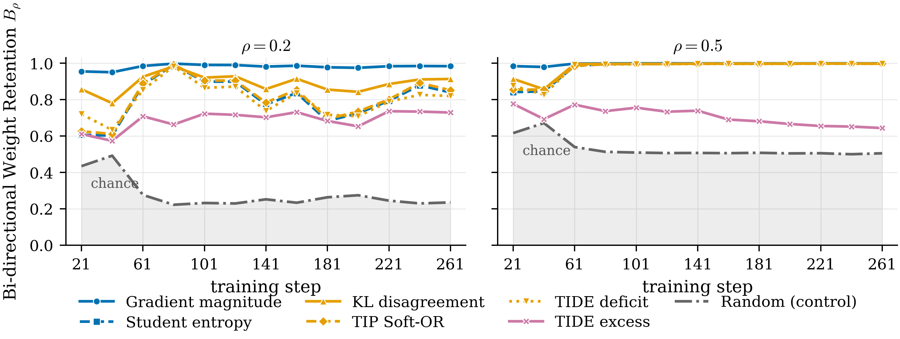

Token-selection methods for on-policy distillation (OPD) prioritize student-visited positions using diverse signals, including uncertainty, teacher–student disagreement, and mismatch direction. We instead derive token importance from the distillation objective itself: how much can each position’s loss decrease under an equal local KL budget on the student’s predictive distribution? The answer is the utility st = gt⊤ Ft† gt, where gt is the logit gradient and Ft is the categorical Fisher matrix. For reverse-KL it equals the student-weighted variance of the student–teacher log-probability ratio, and for forward-KL it equals the Pearson χ2 divergence, so the appropriate utility follows from the choice of objective. On shared training checkpoints, several independently motivated criteria, including student entropy, KL disagreement, and TIP, concentrate their importance on nearly the same positions as the derived utility at a 50% selection fraction, while diverging at stricter fractions and for direction-specific criteria. We instantiate the utility as Fisher Utility Weighting (FUW), a continuous, mean-normalized token weighting. Across seven mathematical reasoning benchmarks and three Qwen3 student–teacher pairs, FUW improves over matched uniform OPD under both reverse-KL (1.35–4.0 macro points) and forward-KL (1.08–2.71 macro points), and is competitive with existing selective methods using a single closed-form score derived from the training objective.
How Fisher Utility Weighting works
The student generates responses, and the teacher supplies next-token supervision at the prefixes the student visits.
Motivation
Uniform OPD gives every visited position the same weight. Some student predictions already match the teacher; other disagreements require larger changes in the student’s predictive distribution to resolve. Disagreement alone does not tell us which positions offer the greatest local opportunity to reduce the distillation loss.
Objective
Which position’s distillation loss can decrease the most under the same small change in the student’s predictive distribution?
We compare positions at fixed prefixes using a common infinitesimal KL budget. Under the local Fisher approximation, solving for the largest first-order loss reduction gives the token utility and its corresponding improvement:
Token utilityLocal improvement
Here, gt is the loss gradient with respect to student logits, Ft is the categorical Fisher matrix, and ε is the shared KL budget. Higher utility means greater attainable first-order loss reduction. The chosen distillation loss gives a closed-form score computed directly from the two next-token distributions:
Reverse KLForward KL
Generate responses
Collect the prefixes visited by the student and evaluate both models’ next-token distributions.
Measure utility
Score the local learning opportunity using the distillation objective and the student’s Fisher geometry.
Form weights
Take square roots of the scores and normalize over the batch so the average weight is one.
Update the student
Scale each position’s distillation loss by its weight and update the student with the weighted objective.
How the scores are computed in training
For reverse KL, use the union of the student’s and teacher’s top 16 tokens, containing at most 32 tokens. Renormalize both distributions on that set, clip their log ratios to [−5, 5], and compute the student-weighted variance. These approximate scores supply the square-root weights.
If every score is zero, use uniform weights. Stop gradients through the weights when optimizing the student. Forward KL uses its corresponding Pearson χ2 utility and upper-clips the teacher-to-student log ratio at 3 for scoring.
The trust region defines the local utility; training applies the resulting weights in ordinary OPD updates. The theory compares predictive distributions at fixed prefixes, and the paper evaluates the weighting rule under shared model parameters.
Results
Seven mathematical reasoning benchmarks, 1,620 problems, and three Qwen3 student–teacher pairs. Each training run uses 279 steps with 256 sequences per step.
Reverse-KL distillation
FUW improves the macro average over matched uniform OPD across all three model pairs.
Complete reverse-KL math accuracy results
Method
AIME24
AIME25
AMC23
MATH-500
Minerva
OlympiadBench
BRUMO25
Macro Avg@k
Pooled Avg@k
Qwen3-1.7B-Base ← Qwen3-8B
Student (Base)
2.3 ± 1.6
0.4 ± 0.4
7.4 ± 2.1
17.5 ± 1.1
4.7 ± 0.9
7.6 ± 0.6
2.9 ± 1.8
6.1 ± 0.5
9.9 ± 0.5
Teacher (8B)
30.6 ± 7.4
20.6 ± 7.1
62.3 ± 4.5
83.9 ± 1.4
28.4 ± 2.5
47.7 ± 1.7
25.8 ± 7.3
42.8 ± 1.9
55.1 ± 1.1
OPD
8.8 ± 4.4
5.4 ± 3.2
32.0 ± 3.9
61.6 ± 1.7
16.8 ± 1.7
25.6 ± 1.4
9.4 ± 4.8
22.8 ± 1.2
34.5 ± 1.0
TIDE
11.0 ± 4.5
2.3 ± 1.5
33.9 ± 3.9
62.7 ± 1.7
16.5 ± 1.8
25.9 ± 1.4
8.3 ± 4.4
22.9 ± 1.1
35.0 ± 1.0
TIP (Soft-OR, 50%)
10.6 ± 4.8
5.0 ± 3.4
34.9 ± 4.3
66.9 ± 1.7
19.5 ± 2.0
29.2 ± 1.5
11.0 ± 5.3
25.3 ± 1.4
38.4 ± 1.0
FUW (Ours)
12.7 ± 4.9
8.5 ± 4.1
37.0 ± 4.4
67.5 ± 1.7
20.3 ± 2.1
29.7 ± 1.5
11.9 ± 5.1
26.8 ± 1.4
39.2 ± 1.1
Qwen3-1.7B-Base ← Qwen3-14B
Student (Qwen3-1.7B-Base)
2.3 ± 1.6
0.4 ± 0.4
7.4 ± 2.1
17.5 ± 1.1
4.7 ± 0.9
7.6 ± 0.6
2.9 ± 1.8
6.1 ± 0.5
9.9 ± 0.5
Teacher (Qwen3-14B)
31.2 ± 7.2
28.1 ± 7.6
63.6 ± 4.4
86.2 ± 1.3
32.7 ± 2.7
51.7 ± 1.7
35.0 ± 7.9
46.9 ± 2.0
58.6 ± 1.0
OPD
10.6 ± 4.7
7.3 ± 3.8
31.6 ± 3.9
62.2 ± 1.8
18.7 ± 1.8
26.4 ± 1.4
10.2 ± 4.9
23.9 ± 1.3
35.5 ± 0.9
TIDE
10.0 ± 4.8
5.0 ± 3.4
34.4 ± 4.1
65.6 ± 1.7
18.8 ± 1.9
28.3 ± 1.4
9.4 ± 4.4
24.5 ± 1.3
37.4 ± 0.9
TIP
10.4 ± 4.8
6.7 ± 3.2
34.1 ± 4.2
66.6 ± 1.7
20.1 ± 2.0
29.3 ± 1.5
15.6 ± 6.2
26.1 ± 1.4
38.5 ± 0.9
FUW (Ours)
11.9 ± 5.1
7.1 ± 3.9
36.3 ± 4.3
69.4 ± 1.7
22.2 ± 2.0
30.2 ± 1.5
11.9 ± 4.7
27.0 ± 1.3
40.2 ± 0.9
Qwen3-4B-Base ← Qwen3-30B-A3B-Instruct-2507
Student 4B-Base
4.4 ± 2.6
0.0 ± 0.0
17.4 ± 3.2
21.1 ± 1.0
5.8 ± 0.9
15.1 ± 0.9
8.8 ± 3.6
10.4 ± 0.8
14.9 ± 0.6
Teacher 30B-A3B
75.2 ± 6.7
65.4 ± 7.4
91.6 ± 2.7
95.8 ± 0.8
35.2 ± 2.7
67.6 ± 1.7
66.0 ± 6.6
71.0 ± 1.8
72.2 ± 1.0
OPD
29.8 ± 7.5
28.7 ± 7.6
60.5 ± 4.7
84.4 ± 1.3
33.3 ± 2.5
47.6 ± 1.7
29.6 ± 7.4
44.8 ± 2.0
56.2 ± 1.1
TIDE
31.5 ± 8.0
25.8 ± 7.5
59.0 ± 4.8
86.6 ± 1.3
33.2 ± 2.5
50.3 ± 1.7
38.8 ± 7.4
46.4 ± 2.0
58.0 ± 1.1
TIP
32.3 ± 7.7
23.5 ± 7.2
61.9 ± 4.6
85.2 ± 1.3
32.3 ± 2.6
47.3 ± 1.7
36.5 ± 7.4
45.6 ± 2.0
56.3 ± 1.1
FUW (Ours)
26.7 ± 7.2
32.3 ± 7.6
63.4 ± 4.5
85.6 ± 1.4
33.8 ± 2.6
49.2 ± 1.8
32.1 ± 7.5
46.15 ± 1.98
57.54 ± 1.01
Accuracy (%), with the paper’s reported bootstrap uncertainty. Macro gives each benchmark equal weight; pooled gives each problem equal weight. Bold marks the highest trained point estimate in each column. FUW has the highest aggregate estimates for the two 1.7B pairs; TIDE is slightly ahead for the 4B pair.
The framework also applies to forward KL
Using the objective-specific Pearson χ2 utility improves both macro and pooled accuracy over uniform forward-KL distillation for every pair.
Complete forward-KL math accuracy results
Method
AIME24
AIME25
AMC23
MATH-500
Minerva
OlympiadBench
BRUMO25
Macro Avg@k
Pooled Avg@k
Qwen3-1.7B-Base ← Qwen3-8B
FKL (Uniform)
4.6 ± 3.2
2.1 ± 1.5
25.7 ± 3.7
56.9 ± 1.7
19.4 ± 1.9
22.4 ± 1.3
9.4 ± 3.1
20.07 ± 0.94
31.78 ± 0.83
FKL + Utility (Ours)
12.1 ± 4.5
4.4 ± 3.0
28.3 ± 4.0
63.6 ± 1.8
20.4 ± 2.1
24.7 ± 1.3
6.0 ± 3.0
22.78 ± 1.14
35.21 ± 0.89
Qwen3-1.7B-Base ← Qwen3-14B
FKL (Uniform)
3.8 ± 1.6
0.5 ± 0.3
29.4 ± 3.8
57.7 ± 1.7
20.0 ± 1.9
22.4 ± 1.3
9.6 ± 3.9
20.46 ± 0.91
32.23 ± 0.84
FKL + Utility (Ours)
6.9 ± 3.7
2.7 ± 1.7
27.8 ± 3.9
63.0 ± 1.7
19.1 ± 2.0
24.0 ± 1.3
7.3 ± 3.5
21.54 ± 1.02
34.41 ± 0.86
Qwen3-4B-Base ← Qwen3-30B-A3B-Instruct-2507
FKL (Uniform)
24.0 ± 5.3
21.0 ± 5.7
60.1 ± 5.2
84.0 ± 1.5
32.0 ± 2.7
48.5 ± 1.8
24.8 ± 7.4
42.04 ± 1.7
55.85 ± 1.2
FKL + Utility (Ours)
22.9 ± 5.5
22.9 ± 5.9
57.0 ± 5.1
85.5 ± 1.6
32.7 ± 2.9
47.6 ± 1.9
33.5 ± 7.2
43.2 ± 1.8
56.1 ± 1.2
Accuracy (%), mean ± standard error. Bold marks the highest trained point estimate within each pair. Forward-KL utility weighting uses the same model pairs and training setup with its corresponding objective-specific score.
Evaluation protocol
Benchmarks: AIME24 (30 problems), AIME25 (30), AMC23 (83), BRUMO25 (30), MATH-500 (500), Minerva (272), and OlympiadBench (675). Evaluation uses 16 responses per problem on the first four benchmarks and eight on the last three, at temperature 0.7 and top-p 0.95.
Reported uncertainty uses problem-level bootstrap resampling. The paper reports one training run per configuration. Uniform OPD and FUW share the candidate-set construction and loss implementation within each objective.
For forward-KL utility, the teacher-to-student log ratio is upper-clipped at 3 when computing the score; the forward-KL loss is unchanged.
When do token-importance criteria agree?
Several independently motivated criteria concentrate on nearly the same high-importance positions at a 50% selection fraction. Their agreement becomes more criterion- and checkpoint-dependent at 20%.

Bidirectional weight retention along uniformly weighted OPD checkpoints. At the 50% fraction, gradient magnitude, entropy, KL disagreement, TIP, and TIDE-deficit achieve near-complete retention from step 61 onward; TIDE-excess remains distinct. High retention measures shared effective support, while relative weights can still differ.
BibTeX
@misc{sadagopan2026tokenutility,
title = {Token Utility for On-Policy Distillation via Local Trust-Region Optimization},
author = {Narayanan Sadagopan and Yilan Chen and Vijay Lingam},
year = {2026},
eprint = {2610.18883},
archivePrefix = {arXiv},
primaryClass = {cs.LG},
url = {https://arxiv.org/abs/2610.18883}
}